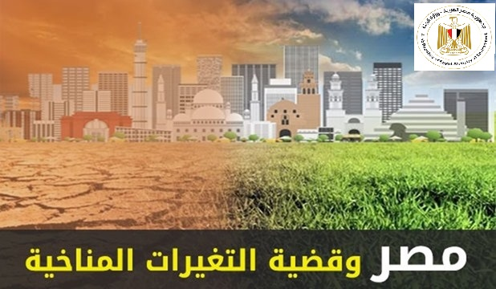
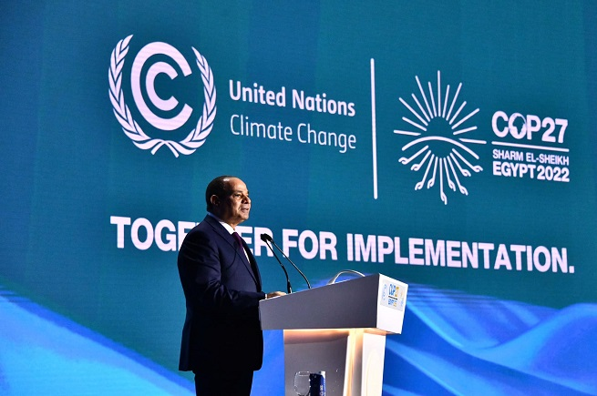
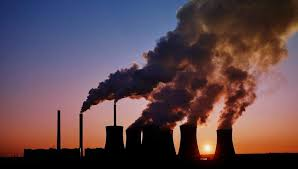
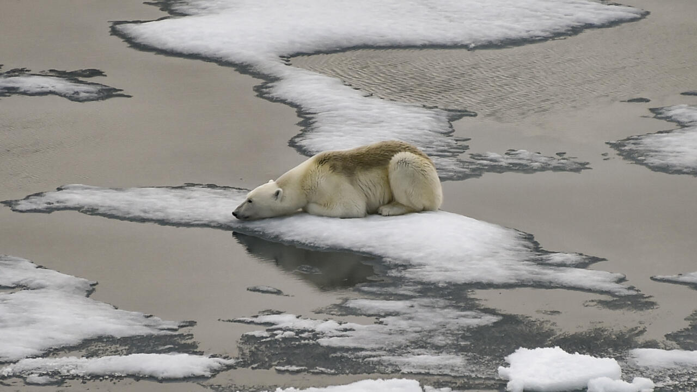
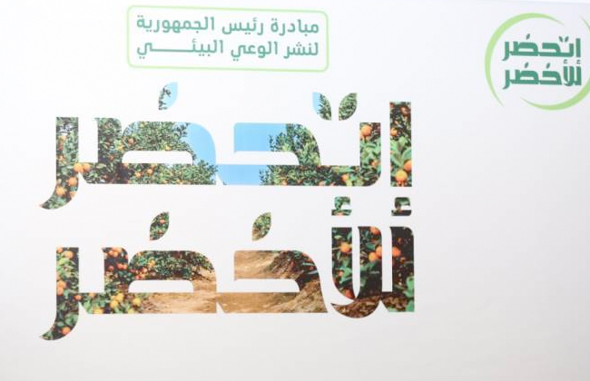
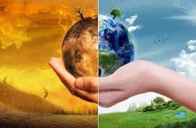

اساليب الحد من التغيرات المناخية.

التغيرات المناخية وموقف مصر.

تبذل مصر جهودًا حديثة للتصدي لتغيرات المناخ وتقليل الانبعاثات الكربونية من خلال مجموعة من المبادرات والمشروعات في مختلف القطاعات مثل مؤتمر cop 27 الذي عقد في شرم الشيخ عام 2022:
قطاع الطاقة:
توسيع استخدام الطاقة المتجددة: تهدف مصر إلى زيادة حصة مصادر الطاقة المتجددة في مزيج الطاقة، مع التركيز على مشاريع الطاقة الشمسية وطاقة الرياح.
قطاع النقل:
مشروعات النقل المستدام: تنفذ مصر مشروعات لتطوير وسائل النقل العام المستدامة، بما في ذلك التوسع في خطوط مترو الأنفاق، وإنشاء القطار الكهربائي السريع، ومشروعات المونوريل.
قطاع الزراعة:
مبادرات الزراعة المستدامة: تعمل مصر على استخدام الروث الحيواني ومخلفات الماشية في إنتاج البايوغاز، مما يقلل من انبعاثات غاز الميثان. كما تم استنباط وزراعة محاصيل أرز تتحمل الجفاف، مما يقلل من انبعاثات غاز الميثان الناتجة عن زراعة الأرز التقليدية.
قطاع الصناعة:
تحسين كفاءة الطاقة: تعمل مصر على تحويل الصناعات كثيفة استهلاك الطاقة إلى استخدام الغاز الطبيعي، الذي ينتج عنه انبعاثات كربونية أقل مقارنة بأنواع الوقود الأحفوري الأخرى، ودعم التحول نحو الطاقة الخضراء النظيفة.
حماية السواحل والموارد المائية:
مشروعات حماية السواحل الشمالية: تنفذ مصر مشاريع لحماية السواحل الشمالية من ارتفاع منسوب البحر، وتأهيل وزراعة 1.5 مليون فدان لتحقيق الأمن الغذائي وتعويض تدهور وتآكل الأراضي في الدلتا.
الاستراتيجية الوطنية لتغير المناخ 2050:
أطلقت مصر الاستراتيجية الوطنية لتغير المناخ 2050 برؤية تتضمن التصدي بفعالية لآثار وتداعيات تغير المناخ، بما يساهم في تحسين جودة الحياة للمواطن المصري، وتحقيق النمو الاقتصادي المستدام، والحفاظ على الموارد الطبيعية والنظم البيئية، مع تعزيز ريادة مصر على الصعيد الدولي في مجال تغير المناخ.
من خلال هذه الجهود المتكاملة، تسعى مصر إلى تعزيز قدرتها على التكيف مع التغيرات المناخية وتقليل الانبعاثات الكربونية، مما يساهم في تحقيق التنمية المستدامة وحماية البيئة للأجيال القادمة.

التغير المناخي ناتج عن عدة أسباب رئيسية، معظمها مرتبط بالأنشطة البشرية، وإليك أهمها:
1. حرق الوقود الأحفوري (الفحم، النفط، الغاز الطبيعي)
يعد المصدر الرئيسي لانبعاثات غازات الدفيئة، خاصة ثاني أكسيد الكربون (CO₂). يستخدم في توليد الكهرباء، وسائل النقل، والصناعة، مما يزيد من تراكم الغازات في الغلاف الجوي ويؤدي إلى الاحتباس الحراري.
2. إزالة الغابات والتصحر
تمتص الأشجار ثاني أكسيد الكربون، وعند قطعها أو حرقها، ينطلق هذا الكربون إلى الغلاف الجوي. إزالة الغابات لأغراض الزراعة أو العمران تقلل من قدرة الأرض على امتصاص الكربون، مما يزيد من ارتفاع درجات الحرارة.
3. الأنشطة الزراعية وتربية المواشي
تنتج الزراعة غازات دفيئة مثل الميثان (CH₄) من الماشية وزراعة الأرز، وأكسيد النيتروز (N₂O) من استخدام الأسمدة الكيميائية. يؤدي الإنتاج الزراعي المكثف إلى تغيرات في استخدام الأراضي، مما يساهم في زيادة الاحترار العالمي.
4. التلوث الصناعي واستخدام المواد الكيميائية
المصانع تطلق كميات كبيرة من الغازات الدفيئة والملوثات الهوائية، بما في ذلك ثاني أكسيد الكربون وأكسيد النيتروجين. بعض المواد الكيميائية، مثل مركبات الكلوروفلوروكربون (CFCs)، تدمر طبقة الأوزون وتساهم في زيادة الاحتباس الحراري.
5. النقل والمواصلات
السيارات، الطائرات، السفن، والقطارات التي تعمل بالوقود الأحفوري تطلق كميات هائلة من غازات الدفيئة. تزايد عدد المركبات وزيادة الرحلات الجوية يؤديان إلى تفاقم المشكلة.
النتيجة: جميع هذه العوامل تساهم في زيادة تراكم الغازات الدفيئة في الغلاف الجوي، مما يؤدي إلى الاحتباس الحراري، وبالتالي التغير المناخي.
يؤدي ذوبان الجليد الناتج عن التغير المناخي إلى ارتفاع مستوى سطح البحر، مما يشكل تهديدًا كبيرًا على المناطق الساحلية في مصر، خاصة دلتا النيل. تُعتبر دلتا النيل منطقة منخفضة الارتفاع، مما يجعلها عرضة لتأثيرات ارتفاع مستوى سطح البحر. فيما يلي أبرز التأثيرات المحتملة:
1.غمر الأراضي الزراعية
من المتوقع أن يؤدي ارتفاع مستوى سطح البحر بمقدار متر واحد إلى غرق حوالي 970 كيلومتر مربع من أراضي الدلتا، مما سيؤثر سلبًا على الإنتاج الزراعي والأمن الغذائي في مصر.
2.تملح التربة والمياه الجوفية
يزيد ارتفاع مستوى سطح البحر من تسلل المياه المالحة إلى التربة والمياه الجوفية، مما يؤدي إلى تملح الأراضي الزراعية وتدهور جودة المحاصيل. كما يؤثر ذلك على نوعية المياه في البحيرات الشمالية، مما يهدد الثروة السمكية.
3. تهديد المناطق الحضرية
مدن ساحلية مثل الإسكندرية ودمياط وبورسعيد معرضة لخطر الغرق نتيجة ارتفاع مستوى سطح البحر. قد يؤدي ذلك إلى نزوح السكان وخسائر اقتصادية كبيرة.
4. تآكل السواحل
يساهم ارتفاع مستوى سطح البحر في زيادة معدلات تآكل السواحل، مما يؤدي إلى فقدان الأراضي الساحلية وتراجع الشواطئ.
5. تأثيرات اقتصادية واجتماعية
قد يتسبب غمر الأراضي وتآكل السواحل في فقدان مصادر الرزق للمزارعين والصيادين، مما يؤدي إلى زيادة معدلات البطالة والهجرة الداخلية.
لمواجهة هذه التحديات، تعمل مصر على تنفيذ مشروعات لحماية الشواطئ، مثل إقامة حواجز وأرصفة بحرية، وتطوير استراتيجيات للتكيف مع التغيرات المناخية. يُظهر هذا الوضع أهمية تعزيز الجهود الوطنية والدولية لمواجهة تأثيرات التغير المناخي وحماية المناطق الساحلية والسكان المتأثرين.
تبذل الحكومة المصرية جهودًا حديثة لزيادة وعي المواطنين بالتغيرات البيئية والمناخية، وذلك من خلال عدة مبادرات وبرامج توعوية. فيما يلي أبرز هذه الجهود.ة:1. المبادرة الرئاسية "اتحضر للأخضر "
أطلقت وزارة البيئة حملة إعلامية وطنية للتوعية بالتغيرات المناخية تحت شعار "رجَّع الطبيعة لطبيعتها"، وذلك ضمن المبادرة الرئاسية "اتحضر للأخضر". تضمنت الحملة إنتاج إعلانات تلفزيونية وإذاعية، وتنفيذ لافتات طرق، بالإضافة إلى لقاءات تلفزيونية ومقالات صحفية لرفع الوعي البيئي بين المواطنين.
2. مبادرة "100 مليون شجرة"
في إطار الجهود لتعزيز الوعي البيئي والمساهمة في تحسين جودة الهواء، تنفذ وزارة البيئة المبادرة الرئاسية "100 مليون شجرة". تم الانتهاء من زراعة 1.4 مليون شجرة في العام الأول من المبادرة، وذلك في مختلف محافظات الجمهورية.
3. الصالونات واللقاءات التوعوية
نظمت وزارة البيئة لقاءات مفتوحة، مثل صالون نقابة الصحفيين، لطرح رسائل التوعية البيئية والمناخية. خلال هذه اللقاءات، تم استعراض الجهود المبذولة لتشجيع الاستثمار البيئي والمناخي، وتسليط الضوء على المبادرات والمشروعات التي تهدف إلى تعزيز الوعي البيئي بين المواطنين.
تُظهر هذه الجهود التزام الدولة المصرية بتوعية المواطنين بالتغيرات البيئية والمناخية، وتشجيعهم على المشاركة في المبادرات التي تهدف إلى حماية البيئة وتحقيق التنمية المستدامة.

تُعتبر مصر من أكثر الدول تأثرًا بالتغيرات المناخية، مما ينعكس سلبًا على الجوانب الاقتصادية والاجتماعية. فيما يلي أبرز هذه التأثيرات:التأثيرات الاقتصادية:
خسائر في الناتج المحلي الإجمالي: تشير تقديرات البنك الدولي إلى أنه بدون جهود مستدامة للتصدي لتحديات تغير المناخ، قد تواجه مصر خسارة في إجمالي الناتج المحلي تتراوح بين 2% و6% بحلول عام 2060.
تهديد المناطق الساحلية: ارتفاع مستوى سطح البحر يهدد المناطق الساحلية، مما قد يؤدي إلى خسائر اقتصادية كبيرة، خاصة في دلتا النيل، حيث يمكن أن تتأثر الأراضي الزراعية والبنية التحتية.
تدهور الإنتاج الزراعي: التغيرات المناخية قد تؤدي إلى تدهور الإنتاج الزراعي وتأثر الأمن الغذائي، مما يزيد من الأعباء الاقتصادية على الدولة والمزارعين.
زيادة معدلات التصحر: التغيرات المناخية تسهم في زيادة معدلات التصحر، مما يؤثر على جودة الأراضي الزراعية ويقلل من الإنتاجية.
التأثيرات الاجتماعية:
تدهور الصحة العامة: ارتفاع درجات الحرارة وزيادة الأحداث المناخية المتطرفة يمكن أن يؤدي إلى تدهور الصحة العامة وزيادة انتشار الأمراض.
الهجرة الداخلية: التغيرات المناخية قد تؤدي إلى نزوح السكان من المناطق المتأثرة، مما يزيد من الضغط على المناطق الحضرية ويؤثر على البنية التحتية والخدمات.
تفاقم الفقر وعدم المساواة: تأثر القطاعات الحيوية مثل الزراعة والصيد قد يؤدي إلى فقدان الوظائف وتفاقم معدلات الفقر، مما يزيد من التحديات الاجتماعية.
تأثيرات على التوزيع السكاني: التغيرات المناخية قد تؤثر على التوزيع السكاني في مصر، حيث يمكن أن تؤدي إلى نزوح السكان من المناطق المتأثرة إلى مناطق أخرى، مما يزيد من الضغط على الموارد والخدمات في تلك المناطق.
لمواجهة هذه التحديات، يجب على مصر تبني سياسات تكيف فعّالة وتعزيز الاستثمارات في القطاعات المتأثرة، بالإضافة إلى تعزيز الوعي المجتمعي حول أهمية مواجهة التغيرات المناخية.
.jpg)
يُشكِّل التغير المناخي تهديدًا كبيرًا للتنوع البيولوجي والنظم البيئية في مصر، مما يؤثر سلبًا على العديد من القطاعات الحيوية. فيما يلي أبرز التأثيرات:
1. تأثيرات على البيئة البحرية تُعَدُّ الشعاب المرجانية في البحر الأحمر من أهم النظم البيئية البحرية في مصر. مع ارتفاع درجات حرارة المياه، تتعرض هذه الشعاب لظاهرة التبييض، مما يؤدي إلى فقدان التنوع البيولوجي البحري. كما أن ارتفاع مستوى سطح البحر يهدد بتآكل السواحل وتدمير المواطن الطبيعية للكائنات البحرية.
2. تأثيرات على البيئة الزراعية
يؤثر التغير المناخي على الإنتاجية الزراعية في مصر. ارتفاع درجات الحرارة وتغير نمط هطول الأمطار يؤديان إلى تقليل إنتاجية المحاصيل الزراعية، مما يهدد الأمن الغذائي. كما أن زيادة ملوحة التربة نتيجة ارتفاع مستوى سطح البحر تؤثر سلبًا على جودة الأراضي الزراعية.
3. تأثيرات على التنوع البيولوجي البري
تؤدي التغيرات المناخية إلى فقدان المواطن الطبيعية للعديد من الأنواع البرية، مما يزيد من خطر انقراضها. تغير درجات الحرارة وأنماط هطول الأمطار يؤثران على توزيع الكائنات الحية وتوقيت دورات حياتها، مما يهدد التنوع البيولوجي.
4. تأثيرات على الصحة العامة
التغيرات في التنوع البيولوجي والنظم البيئية قد تزيد من انتشار الأمراض المعدية. تغير المواطن الطبيعية للكائنات قد يؤدي إلى تفاعل أكبر بين البشر والحيوانات الناقلة للأمراض، مما يزيد من مخاطر انتقال الأمراض.
لمواجهة هذه التحديات، تعمل مصر على تنفيذ استراتيجيات وطنية للتكيف مع التغيرات المناخية، بما في ذلك حماية التنوع البيولوجي وتعزيز استدامة النظم البيئية. تشمل هذه الجهود تعزيز البحث العلمي، وتطوير سياسات بيئية مستدامة، وزيادة الوعي المجتمعي بأهمية الحفاظ على البيئة.فيديو تعريفي يوضح أخطار التغيرات المناخية
المصادر
.png)
.png)
.jpg)
.